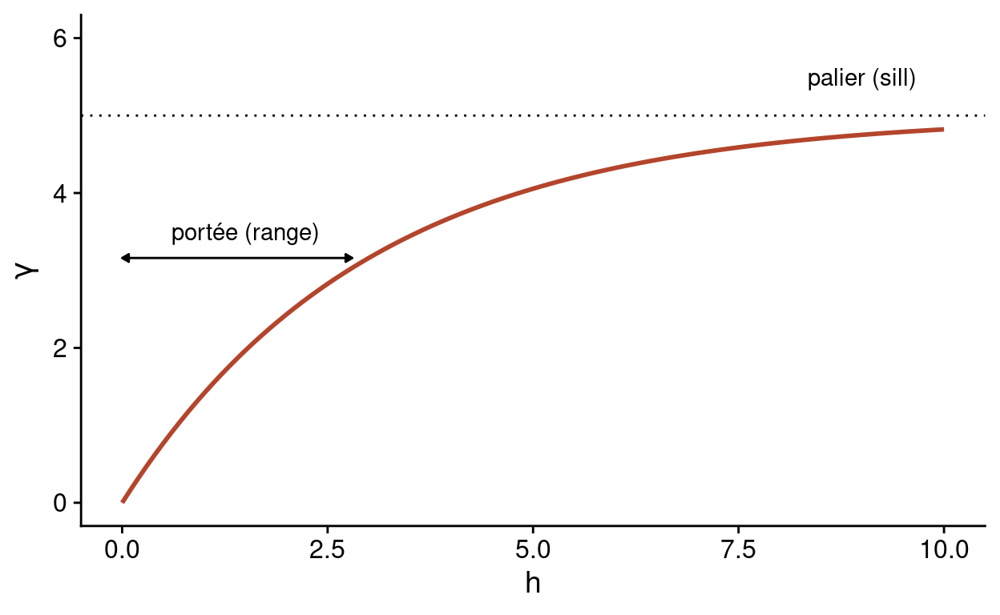
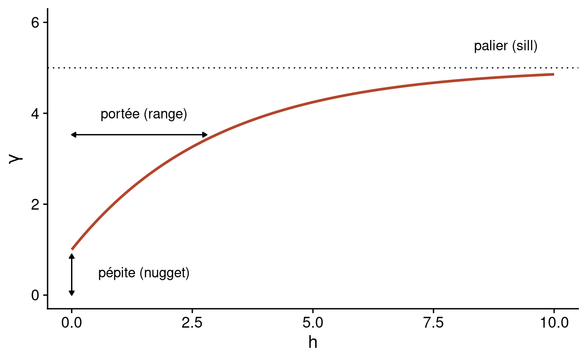
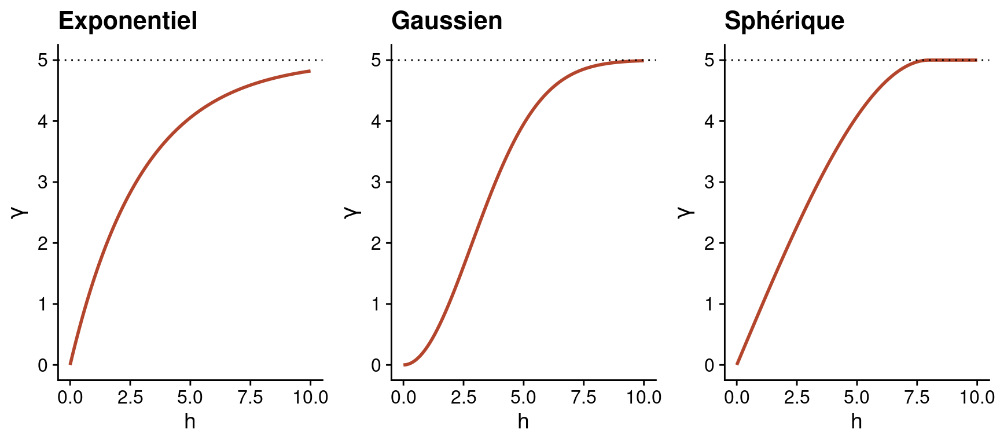
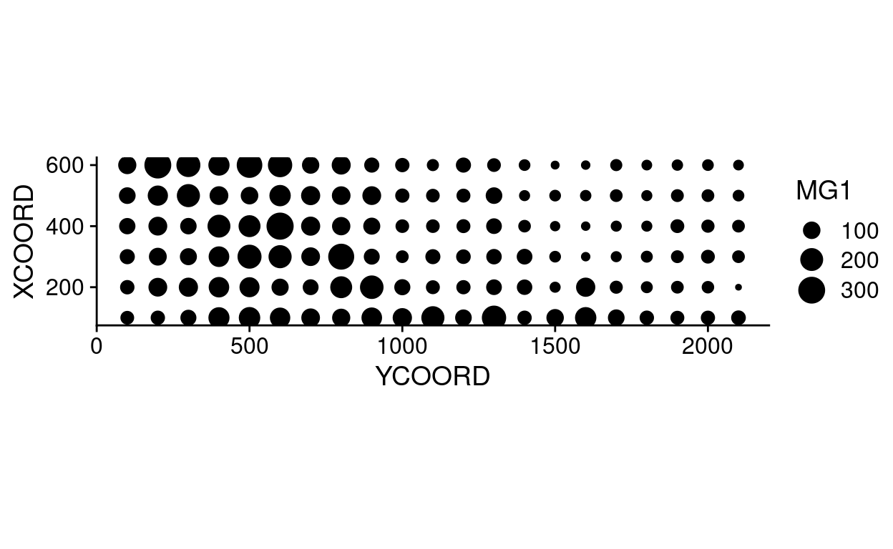
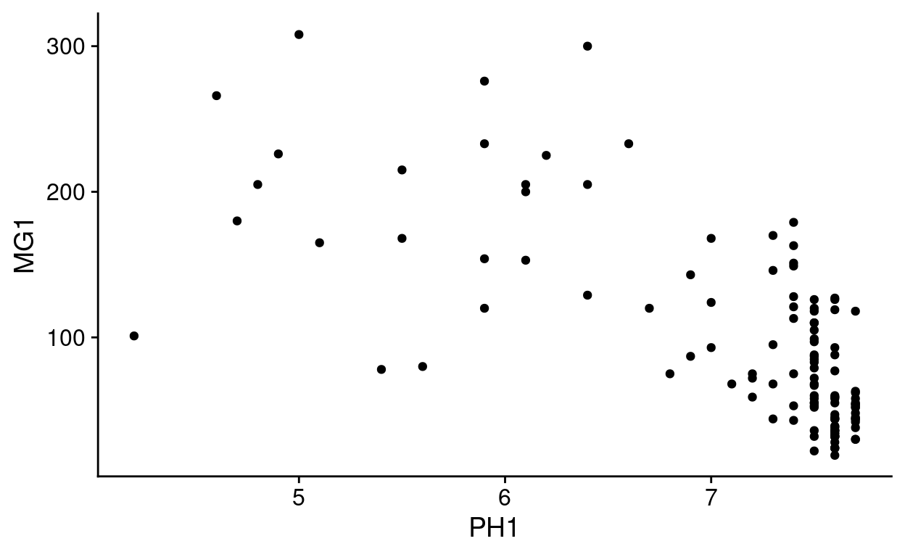
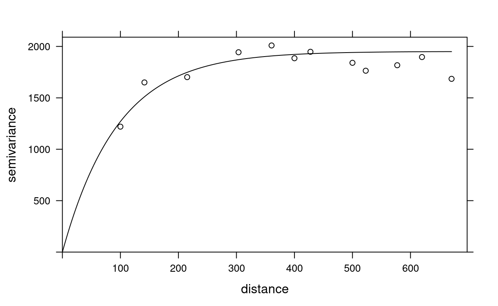
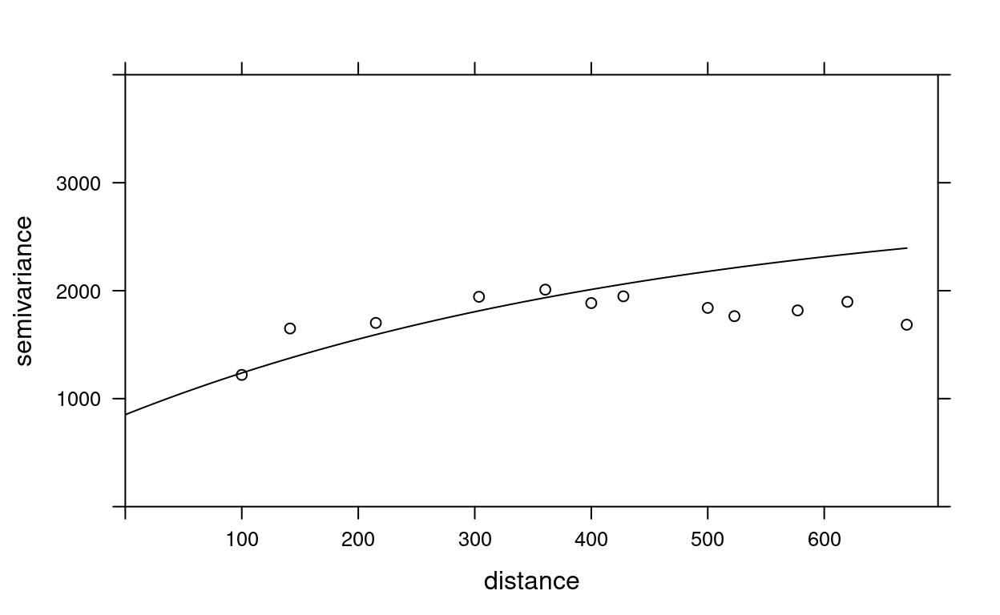
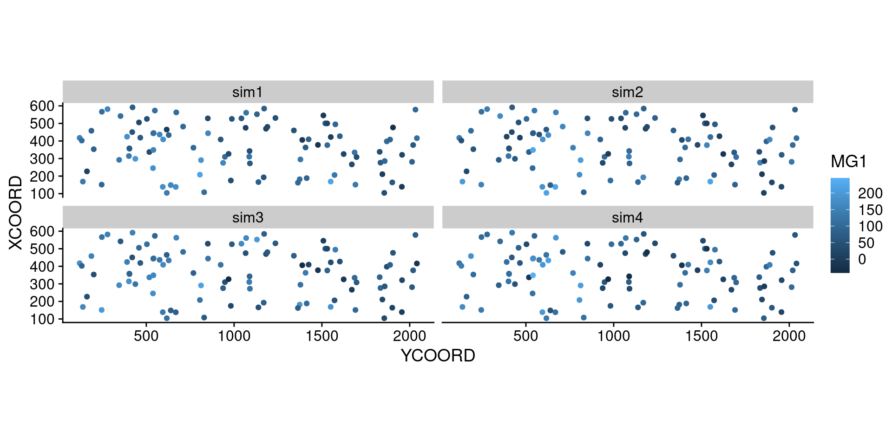
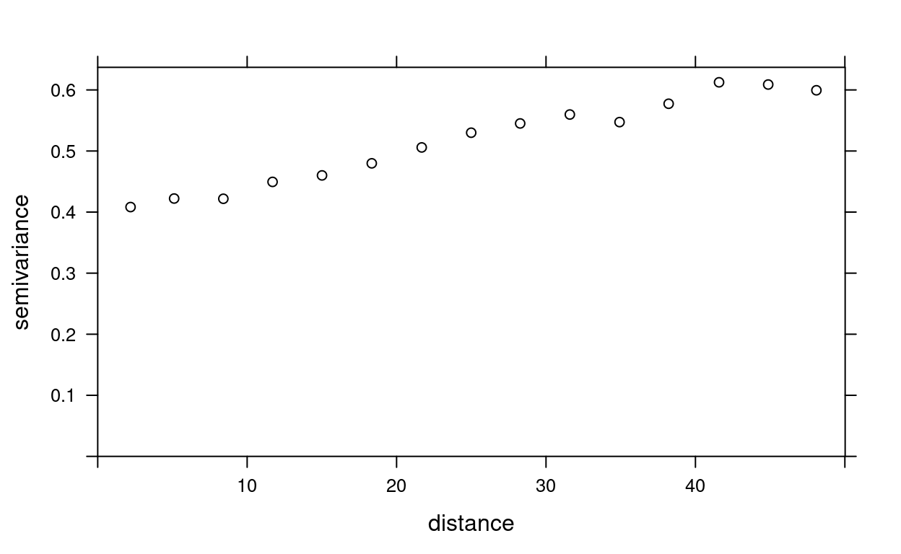

Corrélation spatiale d’une variable
La corrélation entre les mesures d’une variable prises à des points rapprochés est une caractéristique dans de nombreux jeux de données. Ce principe est parfois appelé “première loi de la géographie” et exprimé par la citation de Waldo Tobler: “Everything is related to everything else, but near things are more related than distant things.” (Tout est relié, mais les choses rapprochées le sont davantage que celles éloignées).
En statistique, nous parlons souvent d’autocorrélation pour désigner la corrélation qui existe entre les mesures d’une même variable prises à différents moments (autocorrélation temporelle) ou différents lieux (autocorrélation spatiale).
Dépendance intrinsèque ou induite
Il existe deux types fondamentaux de dépendance spatiale sur une variable mesurée \(y\): une dépendance intrinsèque à \(y\), ou une dépendance induite par des variables externes influençant \(y\), qui sont elles-mêmes corrélées dans l’espace.
Par exemple, supposons que l’abondance d’une espèce soit corrélée entre deux sites rapprochés:
cette dépendance spatiale peut être induite si elle est due à une corrélation spatiale des facteurs d’habitat qui favorisent ou défavorisent l’espèce;
ou elle peut être intrinsèque si elle est due à la dispersion d’individus entre sites rapprochés.
Dans plusieurs cas, les deux types de dépendance affectent une variable donnée.
Si la dépendance est simplement induite et que les variables externes qui en sont la cause sont incluses dans le modèle expliquant \(y\), alors les résidus du modèle seront indépendants et nous pouvons utiliser toutes les méthodes déjà vues qui ignorent la dépendance spatiale.
Cependant, si la dépendance est intrinsèque ou due à des influences externes non-mesurées, alors il faudra tenir compte de la dépendance spatiale des résidus dans le modèle.
Différentes façons de modéliser les effets spatiaux
Dans cette formation, nous modéliserons directement les corrélations spatiales de nos données. Il est utile de comparer cette approche à d’autres façons d’inclure des aspects spatiaux dans un modèle statistique.
D’abord, nous pourrions inclure des prédicteurs dans le modèle qui représentent la position (ex.: longitude, latitude). De tels prédicteurs peuvent être utiles pour détecter une tendance ou un gradient systématique à grande échelle, que cette tendance soit linéaire ou non (par exemple, avec un modèle additif généralisé).
En contraste à cette approche, les modèles que nous verrons maintenant servent à modéliser une corrélation spatiale dans les fluctuations aléatoires d’une variable (i.e., dans les résidus après avoir enlevé tout effet systématique).
Les modèles mixtes utilisent des effets aléatoires pour représenter la non-indépendance de données sur la base de leur groupement, c’est-à-dire qu’après avoir tenu compte des effets fixes systématiques, les données d’un même groupe sont plus semblables (leur variation résiduelle est corrélée) par rapport aux données de groupes différents. Ces groupes étaient parfois définis selon des critères spatiaux (observations regroupées en sites).
Cependant, dans un contexte d’effet aléatoire de groupe, tous les groupes sont aussi différents les uns des autres, ex.: deux sites à 100 km l’un de l’autre ne sont pas plus ou moins semblables que deux sites distants de 2 km.
Les méthodes que nous verrons ici et dans les prochains parties de la formation nous permettent donc ce modéliser la non-indépendance sur une échelle continue (plus proche = plus corrélé) plutôt que seulement discrète (hiérarchie de groupements).
Modèles géostatistiques
La géostatistique désigne un groupe de techniques tirant leur origine en sciences de la Terre. Elle s’intéresse à des variables distribuées de façon continue dans l’espace, dont on cherche à estimer la distribution en échantillonnant un nombre de points. Un exemple classique de ces techniques provient du domaine minier, où l’on cherchait à créer une carte de la concentration du minerai sur un site à partir d’échantillons pris à différents points du site.
Pour ces modèles, nous supposerons que \(z(x, y)\) est une variable spatiale stationnaire mesurée selon les coordonnées \(x\) et \(y\).
Variogramme
Un aspect central de la géostatistique est l’estimation du variogramme \(\gamma_z\) de la variable \(z\). Le variogramme est égal à la moitié de l’écart carré moyen entre les valeurs de \(z\) pour deux points \((x_i, y_i)\) et \((x_j, y_j)\) séparés par une distance \(h\).
\[\gamma_z(h) = \frac{1}{2} \text{E} \left[ \left( z(x_i, y_i) - z(x_j, y_j) \right)^2 \right]_{d_{ij} = h}\]
Dans cette équation, la fonction \(\text{E}\) avec l’indice \(d_{ij}=h\) désigne l’espérance statistique (autrement dit, la moyenne) de l’écart au carré entre les valeurs de \(z\) pour les points séparés par une distance \(h\).
Si on préfère exprimer l’autocorrélation \(\rho_z(h)\) entre mesures de \(z\) séparées par une distance \(h\), celle-ci est reliée au variogramme par l’équation:
\[\gamma_z = \sigma_z^2(1 - \rho_z)\] ,
où \(\sigma_z^2\) est la variance globale de \(z\).
Notez que \(\gamma_z = \sigma_z^2\) si nous sommes à une distance où les mesures de \(z\) sont indépendantes, donc \(\rho_z = 0\). Dans ce cas, on voit bien que \(\gamma_z\) s’apparente à une variance, même s’il est parfois appelé “semivariogramme” ou “semivariance” en raison du facteur 1/2 dans l’équation ci-dessus.
Modèles théoriques du variogramme
Plusieurs modèles paramétriques ont été proposés pour représenter la corrélation spatiale en fonction de la distance entre points d’échantillonnage. Considérons d’abord une corrélation qui diminue de façon exponentielle:
\[\rho_z(h) = e^{-h/r}\]
Ici, \(\rho_z = 1\) pour \(h = 0\) et la corréaltion est multipliée par \(1/e \approx 0.37\) pour chaque augmentation de \(r\) de la distance. Dans ce contexte, \(r\) se nomme la portée (range) de la corrélation.
À partir de l’équation ci-dessus, nous pouvons calculer le variogramme correspondant.
\[\gamma_z(h) = \sigma_z^2 (1 - e^{-h/r})\]
Voici une représentation graphique de ce variogramme.

En raison de la fonction exponentielle, la valeur de \(\gamma\) à des grandes distances s’approche de la variance globale \(\sigma_z^2\) sans exactement l’atteindre. Cette asymptote est appelée palier (sill) dans le contexte géostatistique et représentée par le symbole \(s\).
Finalement, il n’est parfois pas réaliste de supposer une corrélation parfaite lorsque la distance tend vers 0, en raison d’une variation possible de \(z\) à très petite échelle. On peut ajouter au modèle un effet de pépite (nugget), noté \(n\), pour que \(\gamma\) s’approche de \(n\) (plutôt que 0) si \(h\) tend vers 0. Le terme pépite provient de l’origine minière de ces techniques, où une pépite d’un minerai pourrait être la source d’une variation abrupte de la concentration à petite échelle.
En ajoutant l’effet de pépite, le reste du variogramme est “compressé” pour conserver le même palier, ce qui résulte en l’équation suivante.
\[\gamma_z(h) = n + (s - n) (1 - e^{-h/r})\]
Dans le package gstat que nous utiliserons ci-dessous, le terme \((s - n)\) est le palier partiel (partial sill, ou psill) pour la partie exponentielle.

En plus du modèle exponentiel, deux autres modèles théoriques courants pour le variogramme sont le modèle gaussien (où la corrélation suit une courbe demi-normale), ainsi que le modèle sphérique (où le variogramme augmente de façon linéaire au départ pour ensuite courber et atteindre le palier à une distance égale à sa portée \(r\)). Le modèle sphérique permet donc à la corrélation d’être exactement 0 à grande distance, plutôt que de s’approcher graduellement de zéro dans le cas des autres modèles.
| Modèle | \(\rho(h)\) | \(\gamma(h)\) |
|---|---|---|
| Exponentiel | \(\exp\left(-\frac{h}{r}\right)\) | \(s \left(1 - \exp\left(-\frac{h}{r}\right)\right)\) |
| Gaussien | \(\exp\left(-\frac{h^2}{r^2}\right)\) | \(s \left(1 - \exp\left(-\frac{h^2}{r^2}\right)\right)\) |
| Sphérique \((h < r)\) * | \(1 - \frac{3}{2}\frac{h}{r} + \frac{1}{2}\frac{h^3}{r^3}\) | \(s \left(\frac{3}{2}\frac{h}{r} - \frac{1}{2}\frac{h^3}{r^3} \right)\) |
* Pour le modèle sphérique, \(\rho = 0\) et \(\gamma = s\) si \(h \ge r\).

Variogramme empirique
Pour estimer \(\gamma_z(h)\) à partir de données empiriques, nous devons définir des classes de distance, donc grouper différentes distances dans une marge \(\pm \delta\) autour d’une distance \(h\), puis calculer l’écart-carré moyen pour les paires de points dans cette classe de distance.
\[\hat{\gamma_z}(h) = \frac{1}{2 N_{\text{paires}}} \sum \left[ \left( z(x_i, y_i) - z(x_j, y_j) \right)^2 \right]_{d_{ij} = h \pm \delta}\]
Nous verrons dans la partie suivante comment estimer un variogramme dans R.
Modèle de régression avec corrélation spatiale
L’équation suivante représente une régression linéaire multiple incluant une corrélation spatiale résiduelle:
\[v = \beta_0 + \sum_i \beta_i u_i + z + \epsilon\]
Ici, \(v\) désigne la variable réponse et \(u\) les prédicteurs, pour ne pas confondre avec les coordonnées spatiales \(x\) et \(y\).
En plus du résidu \(\epsilon\) qui est indépendant entre les observations, le modèle inclut un terme \(z\) qui représente la portion spatialement corrélée de la variance résiduelle.
Voici une suggestions d’étapes à suivre pour appliquer ce type de modèle:
Ajuster le modèle de régression sans corrélation spatiale.
Vérifier la présence de corrélation spatiale à partir du variogramme empirique des résidus.
Ajuster un ou plusieurs modèles de régression avec corrélation spatiale et choisir celui qui montre le meilleur ajustement aux données.
Modèles géostatistiques dans R
Le package gstat contient des fonctions liées à la géostatistique. Pour cet exemple, nous utiliserons le jeu de données oxford de ce package, qui contient des mesures de propriétés physiques et chimiques pour 126 échantillons du sol d’un site, ainsi que leurs coordonnées XCOORD et YCOORD.
'data.frame': 126 obs. of 22 variables:
$ PROFILE : num 1 2 3 4 5 6 7 8 9 10 ...
$ XCOORD : num 100 100 100 100 100 100 100 100 100 100 ...
$ YCOORD : num 2100 2000 1900 1800 1700 1600 1500 1400 1300 1200 ...
$ ELEV : num 598 597 610 615 610 595 580 590 598 588 ...
$ PROFCLASS: Factor w/ 3 levels "Cr","Ct","Ia": 2 2 2 3 3 2 3 2 3 3 ...
$ MAPCLASS : Factor w/ 3 levels "Cr","Ct","Ia": 2 3 3 3 3 2 2 3 3 3 ...
$ VAL1 : num 3 3 4 4 3 3 4 4 4 3 ...
$ CHR1 : num 3 3 3 3 3 2 2 3 3 3 ...
$ LIME1 : num 4 4 4 4 4 0 2 1 0 4 ...
$ VAL2 : num 4 4 5 8 8 4 8 4 8 8 ...
$ CHR2 : num 4 4 4 2 2 4 2 4 2 2 ...
$ LIME2 : num 4 4 4 5 5 4 5 4 5 5 ...
$ DEPTHCM : num 61 91 46 20 20 91 30 61 38 25 ...
$ DEP2LIME : num 20 20 20 20 20 20 20 20 40 20 ...
$ PCLAY1 : num 15 25 20 20 18 25 25 35 35 12 ...
$ PCLAY2 : num 10 10 20 10 10 20 10 20 10 10 ...
$ MG1 : num 63 58 55 60 88 168 99 59 233 87 ...
$ OM1 : num 5.7 5.6 5.8 6.2 8.4 6.4 7.1 3.8 5 9.2 ...
$ CEC1 : num 20 22 17 23 27 27 21 14 27 20 ...
$ PH1 : num 7.7 7.7 7.5 7.6 7.6 7 7.5 7.6 6.6 7.5 ...
$ PHOS1 : num 13 9.2 10.5 8.8 13 9.3 10 9 15 12.6 ...
$ POT1 : num 196 157 115 172 238 164 312 184 123 282 ...Supposons que nous souhaitons modéliser la concentration de magnésium (MG1), représentée en fonction de la position spatiale dans le graphique suivant.
library(ggplot2)
ggplot(oxford, aes(x = YCOORD, y = XCOORD, size = MG1)) +
geom_point() +
coord_fixed()

Notez que les axes \(x\) et \(y\) ont été inversés par souci d’espace. La fonction coord_fixed() de ggplot2 assure que l’échelle soit la même sur les deux axes, ce qui est utile pour représenter des données spatiales.
Nous voyons tout de suite que ces mesures ont été prises sur une grille de 100 m de côté. Il semble que la concentration de magnésium soit spatialement corrélée, bien qu’il puisse s’agir d’une corrélation induite par une autre variable. Nous savons notamment que la concentration de magnésium est reliée négativement au pH du sol (PH1).
ggplot(oxford, aes(x = PH1, y = MG1)) +
geom_point()

La fonction variogram de gstat sert à estimer un variogramme à partir de données empiriques. Voici le résultat obtenu pour la variable MG1.
var_mg <- variogram(MG1 ~ 1, locations = ~ XCOORD + YCOORD, data = oxford)
var_mg
np dist gamma dir.hor dir.ver id
1 225 100.0000 1601.404 0 0 var1
2 200 141.4214 1950.805 0 0 var1
3 548 215.0773 2171.231 0 0 var1
4 623 303.6283 2422.245 0 0 var1
5 258 360.5551 2704.366 0 0 var1
6 144 400.0000 2948.774 0 0 var1
7 570 427.5569 2994.621 0 0 var1
8 291 500.0000 3402.058 0 0 var1
9 366 522.8801 3844.165 0 0 var1
10 200 577.1759 3603.060 0 0 var1
11 458 619.8400 3816.595 0 0 var1
12 90 670.8204 3345.739 0 0 var1La formule MG1 ~ 1 indique qu’aucun prédicteur linéaire n’est inclus dans ce modèle, tandis que l’argument locations indique quelles variables du tableau correspondent aux coordonnées spatiales.
Dans le tableau obtenu, gamma est la valeur du variogramme pour la classe de distance centrée sur dist, tandis que np est le nombre de paires de points dans cette classe. Ici, puisque les points sont situés sur une grille, nous obtenons des classes de distance régulières (ex.: 100 m pour les points voisins sur la grille, 141 m pour les voisins en diagonale, etc.).
Nous nous limitons ici à l’estimation de variogrammes isotropiques, c’est-à-dire que le variogramme dépend seulement de la distance entre les deux points et non de la direction. Bien que nous n’ayons pas le temps de le voir aujourd’hui, il est possible avec gstat d’estimer séparément le variogramme dans différentes directions.
Nous pouvons illustrer le variogramme avec plot.
plot(var_mg, col = "black")

Si nous voulons estimer la corrélation spatiale résiduelle de MG1 après avoir inclus l’effet de PH1, nous pouvons ajouter ce prédicteur à la formule.
var_mg <- variogram(MG1 ~ PH1, locations = ~ XCOORD + YCOORD, data = oxford)
plot(var_mg, col = "black")

En incluant l’effet du pH, la portée de la corrélation spatiale semble diminuer, alors que le plateau est atteint autour de 300 m. Il semble même que le variogramme diminue au-delà de 400 m. En général, nous supposons que la variance entre deux points ne diminue pas avec la distance, à moins d’avoir un patron spatial périodique.
La fonction fit.variogram accepte comme arguments un variogramme estimé à partir des données, ainsi qu’un modèle théorique décrit dans une fonction vgm, puis estime les paramètres de ce modèle en fonction des données. L’ajustement se fait par la méthode des moindres carrés.
Par exemple, vgm("Exp") indique d’ajuster un modèle exponentiel.
vfit <- fit.variogram(var_mg, vgm("Exp"))
vfit
model psill range
1 Nug 0.000 0.00000
2 Exp 1951.496 95.11235Il n’y a aucun effet de pépite, car psill = 0 pour la partie Nug (nugget) du modèle. La partie exponentielle a un palier à 1951 et une portée de 95 m.
Pour comparer différents modèles, on peut donner un vecteur de noms de modèles à vgm. Dans l’exemple suivant, nous incluons les modèles exponentiel, gaussien (“Gau”) et sphérique (“Sph”).
vfit <- fit.variogram(var_mg, vgm(c("Exp", "Gau", "Sph")))
vfit
model psill range
1 Nug 0.000 0.00000
2 Exp 1951.496 95.11235La fonction nous donne le résultat du modèle le mieux ajusté (plus faible somme des écarts au carré), qui est ici le même modèle exponentiel.
Finalement, nous pouvons superposer le modèle théorique et le variogramme empirique sur un même graphique.
plot(var_mg, vfit, col = "black")

Régression avec corrélation spatiale
Nous avons vu ci-dessus que le package gstat permet d’estimer le variogramme des résidus d’un modèle linéaire. Dans notre exemple, la concentration de magnésium était modélisée en fonction du pH, avec des résidus spatialement corrélés.
Un autre outil pour ajuster ce même type de modèle est la fonction gls du package nlme, qui est inclus avec l’installation de R.
Cette fonction applique la méthode des moindres carrés généralisés (generalized least squares) pour ajuster des modèles de régression linéaire lorsque les résidus ne sont pas indépendants ou lorsque la variance résiduelle n’est pas la même pour toutes les observations. Comme les estimés des coefficients dépendent de l’estimé des corrélations entre les résidus et que ces derniers dépendent eux-mêmes des coefficients, le modèle est ajusté par un algorithme itératif:
On ajuste un modèle de régression linéaire classique (sans corrélation) pour obtenir des résidus.
On ajuste le modèle de corrélation spatiale (variogramme) avec ses résidus.
On ré-estime les coefficients de la régression en tenant compte maintenant des corrélations.
Les étapes 2 et 3 sont répétées jusqu’à ce que les estimés soient stables à une précision voulue.
Voici l’application de cette méthode au même modèle pour la concentration de magnésium dans le jeu de données oxford. Dans l’argument correlation de gls, nous spécifions un modèle de corrélation exponentielle en fonction de nos coordonnées spatiales et indiquons que nous voulons aussi estimer un effet de pépite.
En plus de la corrélation exponentielle corExp, la fonction gls peut aussi estimer un modèle gaussien (corGaus) ou sphérique (corSpher).
library(nlme)
gls_mg <- gls(MG1 ~ PH1, oxford,
correlation = corExp(form = ~ XCOORD + YCOORD, nugget = TRUE))
summary(gls_mg)
Generalized least squares fit by REML
Model: MG1 ~ PH1
Data: oxford
AIC BIC logLik
1278.65 1292.751 -634.325
Correlation Structure: Exponential spatial correlation
Formula: ~XCOORD + YCOORD
Parameter estimate(s):
range nugget
478.0322959 0.2944753
Coefficients:
Value Std.Error t-value p-value
(Intercept) 391.1387 50.42343 7.757084 0
PH1 -41.0836 6.15662 -6.673079 0
Correlation:
(Intr)
PH1 -0.891
Standardized residuals:
Min Q1 Med Q3 Max
-2.1846957 -0.6684520 -0.3687813 0.4627580 3.1918604
Residual standard error: 53.8233
Degrees of freedom: 126 total; 124 residualPour comparer ce résultat au variogramme ajusté ci-dessus, il faut transformer les paramètres donnés par gls. La portée (range) a le même sens dans les deux cas et correspond à 478 m pour le résultat de gls. La variance globale des résidus est le carré de Residual standard error. L’effet de pépite ici (0.294) est exprimé comme fraction de cette variance. Finalement, pour obtenir le palier partiel de la partie exponentielle, il faut soustraire l’effet de pépite de la variance totale.
Après avoir réalisé ces calculs, nous pouvons donner ces paramètres à la fonction vgm de gstat pour superposer ce variogramme estimé par gls à notre variogramme des résidus du modèle linéaire classique.
gls_range <- 478
gls_var <- 53.823^2
gls_nugget <- 0.294 * gls_var
gls_psill <- gls_var - gls_nugget
gls_vgm <- vgm("Exp", psill = gls_psill, range = gls_range, nugget = gls_nugget)
plot(var_mg, gls_vgm, col = "black", ylim = c(0, 4000))

Est-ce que le modèle est moins bien ajusté aux données ici? En fait, ce variogramme empirique représenté par les points avait été obtenu à partir des résidus du modèle linéaire ignorant la corrélation spatiale, donc c’est un estimé biaisé des corrélations spatiales réelles. La méthode est quand même adéquate pour vérifier rapidement s’il y a présence de corrélations spatiales. Toutefois, pour ajuster simultanément les coefficients de la régression et les paramètres de corrélation spatiale, l’approche des moindres carrés généralisés (GLS) est préférable et produira des estimés plus justes.
Finalement, notez que le résultat du modèle gls donne aussi l’AIC, que nous pouvons utiliser pour comparer l’ajustement de différents modèles (avec différents prédicteurs ou différentes formes de corrélation spatiale).
Exercice
Le fichier bryo_belg.csv est adapté des données de l’étude:
Neyens, T., Diggle, P.J., Faes, C., Beenaerts, N., Artois, T. et Giorgi, E. (2019) Mapping species richness using opportunistic samples: a case study on ground-floor bryophyte species richness in the Belgian province of Limburg. Scientific Reports 9, 19122. https://doi.org/10.1038/s41598-019-55593-x
Ce tableau de données indique la richesse spécifique des bryophytes au sol (richness) pour différents points d’échantillonnage de la province belge de Limbourg, avec leur position (x, y) en km, en plus de l’information sur la proportion de forêts (forest) et de milieux humides (wetland) dans une cellule de 1 km\(^2\) contenant le point d’échantillonnage.
richness forest wetland x y
1 9 0.2556721 0.5036614 228.9516 220.8869
2 6 0.6449114 0.1172068 227.6714 219.8613
3 5 0.5039905 0.6327003 228.8252 220.1073
4 3 0.5987329 0.2432942 229.2775 218.9035
5 2 0.7600775 0.1163538 209.2435 215.2414
6 10 0.6865434 0.0000000 210.4142 216.5579Pour cet exercice, nous utiliserons la racine carrée de la richesse spécifique comme variable réponse. La transformation racine carrée permet souvent d’homogénéiser la variance des données de comptage afin d’y appliquer une régression linéaire.
Ajustez un modèle linéaire de la richesse spécifique transformée en fonction de la fraction de forêt et de milieux humides, sans tenir compte des corrélations spatiales. Quel est l’effet des deux prédicteurs selon ce modèle?
Calculez le variogramme empirique des résidus du modèle en (a). Semble-t-il y avoir une corrélation spatiale entre les points?
Note: L’argument cutoff de la fonction variogram spécifie la distance maximale à laquelle le variogramme est calculé. Vous pouvez ajuster manuellement cette valeur pour bien voir le palier.
Ré-ajustez le modèle linéaire en (a) avec la fonction
glsdu package nlme, en essayant différents types de corrélations spatiales (exponentielle, gaussienne, sphérique). Comparez les modèles (incluant celui sans corrélation spatiale) avec l’AIC.Quel est l’effet de la fraction de forêts et de milieux humides selon le modèle en (c)? Expliquez les différences entre les conclusions de ce modèle et du modèle en (a).
Krigeage
Tel que mentionné précédemment, une application courante des modèles géostatistiques consiste à prédire la valeur de la variable de réponse à des points non-échantillonnés, une forme d’interpolation spatiale appelée krigeage (kriging).
Il existe trois principaux types de krigeage selon les suppositions faites au sujet de la variable réponse:
Krigeage ordinaire: variable stationnaire avec une moyenne inconnue.
Krigeage simple: Variable stationnaire avec une moyenne connue.
Krigeage universel: Variable dont la tendance est donnée par un modèle linéaire ou non linéaire.
Pour toutes les méthodes de krigeage, les prédictions à un nouveau point sont une moyenne pondérée des valeurs à des points connus. Ces pondérations sont choisies de manière à ce que le krigeage fournisse la meilleure prédiction linéaire non biaisée de la variable de réponse, si les hypothèses du modèle (en particulier le variogramme) sont correctes. C’est-à-dire que, parmi toutes les prédictions non biaisées possibles, les poids sont choisis de manière à donner l’erreur quadratique moyenne minimale. Le krigeage fournit également une estimation de l’incertitude de chaque prédiction.
Bien que nous ne présentions pas ici les équations détaillées du krigeage, les poids dépendent à la fois des corrélations (estimées par le variogramme) entre les points échantillonnés et le nouveau point, ainsi que des corrélations entre les points échantillonnés eux-mêmes. Autrement dit, les points échantillonnés proches du nouveau point ont plus de poids, mais les points échantillonnés isolés ont également plus de poids, car les points échantillonnés proches les uns des autres fournissent une informations redondante.
Le krigeage est une méthode d’interpolation, donc la prédiction à un point échantillonné sera toujours égale à la valeur mesurée (la variable est supposée être mesurée sans erreur, elle varie seulement entre les points). Cependant, en présence d’un effet de pépite, tout petit déplacement par rapport à l’endroit échantillonné présentera une variabilité en fonction de la pépite.
Dans l’exemple ci-dessous, nous générons un nouvel ensemble de données composé de coordonnées (x, y) générées de façon aléatoire dans la zone d’étude ainsi que des valeurs de pH générées de façon aléatoire sur la base des données oxford. Nous appliquons ensuite la fonction krige pour prédire les valeurs de magnésium à ces nouveaux points. Notez que nous spécifions le variogramme dérivé des résultats du gls dans l’argument model de krige.
set.seed(14)
new_points <- data.frame(
XCOORD = runif(100, min(oxford$XCOORD), max(oxford$XCOORD)),
YCOORD = runif(100, min(oxford$YCOORD), max(oxford$YCOORD)),
PH1 = rnorm(100, mean(oxford$PH1), sd(oxford$PH1))
)
pred <- krige(MG1 ~ PH1, locations = ~ XCOORD + YCOORD, data = oxford,
newdata = new_points, model = gls_vgm)
[using universal kriging]head(pred)
XCOORD YCOORD var1.pred var1.var
1 227.0169 162.1185 47.13065 1269.002
2 418.9136 465.9013 79.68437 1427.269
3 578.5943 2032.7477 60.30539 1264.471
4 376.2734 1530.7193 127.22366 1412.875
5 591.5336 421.6290 105.88124 1375.485
6 355.7369 404.3378 127.73055 1250.114Le résultat de krige comprend les nouvelles coordonnées du point, la prédiction de la variable var1.pred ainsi que sa variance estimée var1.var. Dans le graphique ci-dessous, nous montrons les prédictions moyennes de MG1 à partir du krigeage (triangles) ainsi que les mesures (cercles).
pred$MG1 <- pred$var1.pred
ggplot(oxford, aes(x = YCOORD, y = XCOORD, color = MG1)) +
geom_point() +
geom_point(data = pred, shape = 17, size = 2) +
coord_fixed()

La moyenne et la variance estimées par krigeage peuvent être utilisées pour simuler les valeurs possibles de la variable à chaque nouveau point, conditionnellement aux valeurs échantillonnées. Dans l’exemple ci-dessous, nous avons effectué 4 simulations conditionnelles en ajoutant l’argument nsim = 4 à la même instruction krige.
sim_mg <- krige(MG1 ~ PH1, locations = ~ XCOORD + YCOORD, data = oxford,
newdata = new_points, model = gls_vgm, nsim = 4)
drawing 4 GLS realisations of beta...
[using conditional Gaussian simulation]head(sim_mg)
XCOORD YCOORD sim1 sim2 sim3 sim4
1 227.0169 162.1185 13.22592 32.43060 42.81847 79.60594
2 418.9136 465.9013 67.94216 15.53717 69.25356 63.42233
3 578.5943 2032.7477 99.93083 77.98291 74.28468 58.98483
4 376.2734 1530.7193 104.86240 155.50774 85.82552 143.07373
5 591.5336 421.6290 78.14221 68.62827 147.33052 130.14264
6 355.7369 404.3378 164.46754 117.26160 131.85158 143.58951library(tidyr)
sim_mg <- pivot_longer(sim_mg, cols = c(sim1, sim2, sim3, sim4),
names_to = "sim", values_to = "MG1")
ggplot(sim_mg, aes(x = YCOORD, y = XCOORD, color = MG1)) +
geom_point() +
coord_fixed() +
facet_wrap(~ sim)

Solutions
Call:
lm(formula = sqrt(richness) ~ forest + wetland, data = bryo_belg)
Residuals:
Min 1Q Median 3Q Max
-1.8847 -0.4622 0.0545 0.4974 2.3116
Coefficients:
Estimate Std. Error t value Pr(>|t|)
(Intercept) 2.34159 0.08369 27.981 < 2e-16 ***
forest 1.11883 0.13925 8.034 9.74e-15 ***
wetland -0.59264 0.17216 -3.442 0.000635 ***
---
Signif. codes: 0 '***' 0.001 '**' 0.01 '*' 0.05 '.' 0.1 ' ' 1
Residual standard error: 0.7095 on 417 degrees of freedom
Multiple R-squared: 0.2231, Adjusted R-squared: 0.2193
F-statistic: 59.86 on 2 and 417 DF, p-value: < 2.2e-16La proportion de forêts a un effet positif significatif et la proportion de milieux humides a un effet négatif significatif sur la richesse des bryophytes.
plot(variogram(sqrt(richness) ~ forest + wetland, locations = ~ x + y,
data = bryo_belg, cutoff = 50), col = "black")

Le variogramme augmente au moins jusqu’à une distance de 40 km, il semble donc y avoir des corrélations spatiales dans les résidus du modèle.
bryo_exp <- gls(sqrt(richness) ~ forest + wetland, data = bryo_belg,
correlation = corExp(form = ~ x + y, nugget = TRUE))
bryo_gaus <- gls(sqrt(richness) ~ forest + wetland, data = bryo_belg,
correlation = corGaus(form = ~ x + y, nugget = TRUE))
bryo_spher <- gls(sqrt(richness) ~ forest + wetland, data = bryo_belg,
correlation = corSpher(form = ~ x + y, nugget = TRUE))
AIC(bryo_lm)
[1] 908.6358AIC(bryo_exp)
[1] 867.822AIC(bryo_gaus)
[1] 870.9592AIC(bryo_spher)
[1] 866.9117Le modèle sphérique a l’AIC le plus faible.
summary(bryo_spher)
Generalized least squares fit by REML
Model: sqrt(richness) ~ forest + wetland
Data: bryo_belg
AIC BIC logLik
866.9117 891.1102 -427.4558
Correlation Structure: Spherical spatial correlation
Formula: ~x + y
Parameter estimate(s):
range nugget
43.1725704 0.6063077
Coefficients:
Value Std.Error t-value p-value
(Intercept) 2.0368754 0.2481673 8.207671 0.000
forest 0.6989805 0.1481691 4.717450 0.000
wetland -0.2441117 0.1809121 -1.349339 0.178
Correlation:
(Intr) forest
forest -0.251
wetland -0.235 0.241
Standardized residuals:
Min Q1 Med Q3 Max
-1.75202529 -0.06568241 0.61415377 1.15239953 3.23320744
Residual standard error: 0.799832
Degrees of freedom: 420 total; 417 residualLa magnitude des deux effets est moins importante et l’effet des milieux humides n’est plus significatif. Comme c’est le cas pour d’autres types de résidus non indépendants, la “taille effective” de l’échantillon est ici inférieure au nombre de points, car des points proches les uns des autres fournissent une information redondante. Par conséquent, la relation entre les prédicteurs et la réponse est moins claire que celle donnée par le modèle supposant que tous ces points étaient indépendants.
Notez que les résultats pour les trois modèles gls sont assez similaires, donc le choix d’inclure des corrélations spatiales était plus important que la forme exacte supposée pour le variogramme.